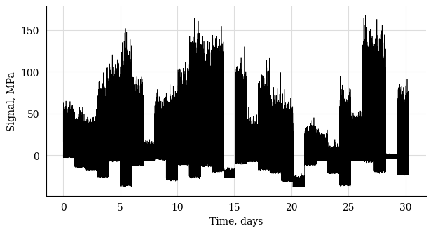
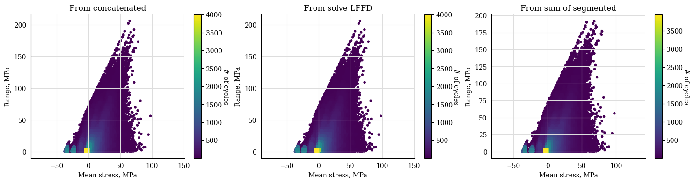
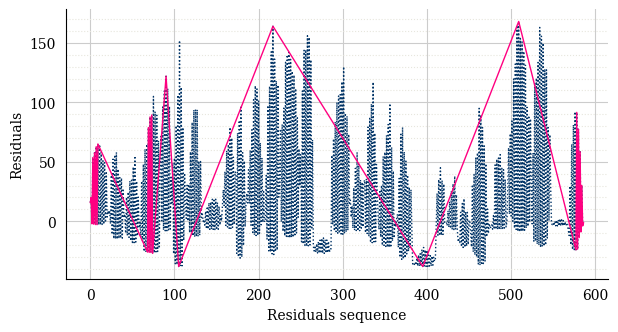

5. CycleCount sum#
a. List of signals (timeseries)#
Note
In this example we define a list of segmented timeseries and compare the
sum of the CycleCount from segmented data with the
CycleCount from concatenated data.
We then apply the solve_lffd() method, as per
LFFD to recover the effect of low-frequency cycles.
Define the time and stress arrays
1# input data
2from collections import defaultdict
3import py_fatigue.testing as test
4
5signal_duration = int(86400 / 60) # (in minutes)
6max_peak = 200 # (in MPa)
7
8# list of timestamps
9timestamps = []
10
11# list of timeseries
12timeseries = []
13
14# concatenated time and stress arrays
15conc_time = np.empty(0)
16conc_stress = np.empty(0)
17
18# main loop
19for i in range(0,30):
20 np.random.seed(i)
21 print(f"{i+1} / 30", end = "\r")
22 min_ = - np.random.randint(3, 40)
23 range_ = np.random.randint(1, 200)
24 timestamps.append(
25 datetime.datetime(2020, 1, i + 1, tzinfo=datetime.timezone.utc)
26 )
27 timeseries.append(defaultdict())
28
29 time = test.get_sampled_time(duration=signal_duration, fs=10, start=i)
30 stress = test.get_random_data(
31 t=time, min_=min_, range_=range_, random_type="weibull", a=2., seed=i
32 )
33 conc_time = np.hstack(
34 [conc_time, time + conc_time[-1] if len(conc_time) > 0 else time]
35 )
36 conc_stress = np.hstack([conc_stress, stress])
37 timeseries[i]["data"] = stress
38 timeseries[i]["time"] = time
39 timeseries[i]["timestamp"] = timestamps[-1]
40 timeseries[i]["name"] = "Example sum"
41
42# Generating the timeseries dictionary
43timeseries.append({"data": conc_stress, "time": conc_time,
44 "timestamp": timestamps[0], "name": "Concatenated"})
45
46# concatenated timeseries plot
47plt.plot(conc_time/60/24, conc_stress, 'k', lw=0.5)
48plt.xlabel("Time, s")
49plt.ylabel("Signal, MPa")
50plt.show()

Define the CycleCount instances
1cc = []
2for t_s in timeseries:
3 cc.append(pf.CycleCount.from_timeseries(**t_s))
4
5# sum of the CycleCount instances
6cc_sum = cc[0] + cc[1]
7
8# CyclCeCount from concatenated data
9cc_conc = pf.CycleCount.from_timeseries(**timeseries[-1])
Concatenated |
|
|---|---|
Cycle counting object |
|
largest full stress range, MPa, |
189.71765 |
largest stress range, MPa |
206.0 |
number of full cycles |
143860 |
number of residuals |
31 |
number of small cycles |
0 |
stress concentration factor |
N/A |
residuals resolved |
False |
mean stress-corrected |
No |
1# sum of the CycleCount instances
2cc_sum.solve_lffd()
Example sum |
|
|---|---|
Cycle counting object |
|
largest full stress range, MPa, |
189.71765 |
largest stress range, MPa |
206 |
number of full cycles |
143860 |
number of residuals |
31 |
number of small cycles |
0 |
stress concentration factor |
N/A |
residuals resolved |
True |
mean stress-corrected |
No |
1fig, axs = plt.subplots(1, 3, figsize=(16, 4))
2cc_conc.plot_histogram(fig=fig, ax=axs[0], plot_type="mean-range")
3cc_sum.solve_lffd().plot_histogram(fig=fig, ax=axs[1], plot_type="mean-range")
4cc_sum.plot_histogram(fig=fig, ax=axs[2], plot_type="mean-range")
5
6plt.show()

1cc_sum.plot_half_cycles_sequence(lw=1)
2plt.show()
